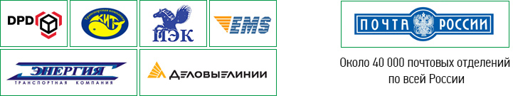
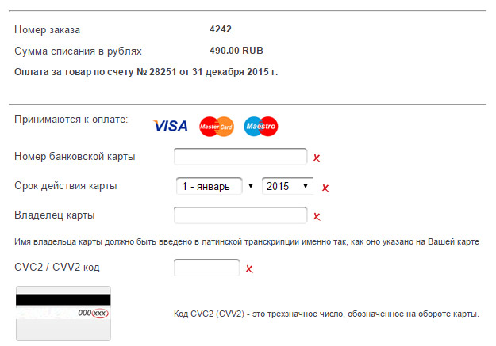

ДОСТАВКА И ОПЛАТА
Доставка по городу 300р., отдаленные районы 500р. (самое простое вызвать такси от нас до вас и передать посылку, так проще нам и дешевле вам) Доставка по России преимущественно поездами, блаблакаром: От 5000р. совокупного заказа вы оплачиваете только услуги перевозчика, обычно 500р. От 3000р. до 5000р. доставка до перевозчика 300р. днем, 500р. ночью, плюс услуги перевозчика, обычно 500р. от 0р. до 3000р. доставки по России нет, либо оговаривается отдельно.
Поместите товар в корзину (нажав кнопку «Купить»), укажите ваше имя и номер телефона. Мы перезвоним вам и ответим на все вопросы.
Доставка заказов по России осуществляется транспортными компаниями и Почтой России.
Доставка заказов осуществляется ведущими транспортными компаниями и Почтой России. Вы сами решаете, что для вас важнее – максимальная скорость, минимальная цена или гибкое сочетание этих факторов. Для вашего удобства работает абсолютно прозрачная онлайн-система отслеживания заказов, чтобы вы в любой момент знали, где находится ваша посылка. Список пунктов выдачи в вашем городе.
Важная информация о порядке получения заказа
Все товары в вашем заказе проходят предварительный осмотр и проверку перед отправкой. Сопутствующие документы (товарный чек, инструкция, заполненный гарантийный талон с печатью) вкладываются в коробку с товаром.
При получении заказа обязательно убедитесь в отсутствии видимых повреждений или сохранности упаковки. При наличии претензий к упаковке проведите вскрытие заказа в присутствии представителя транспортной компании. Составьте соответствующий акт об обнаруженных повреждениях. В акте максимально точно укажите обнаруженные повреждения. Проследите, чтобы представитель транспортной компании поставил свою подпись в акте.
Оплата заказа производится наложенным платежом или по предоплате
Заказ может быть оплачен предварительно или по факту получения в отделении Почты России*. Вы самостоятельно выбираете удобный для вас способ оплаты. Оплату можно произвести в режиме онлайн с помощью банковской карты или через сервис Сбербанк-Онлайн, также возможно оплатить заказ в отделении банка (по квитанции формы ПД-4), в любом банкомате Сбербанка или в отделении Почты России.
* Важно! Наложенный платеж как способ оплаты распространяется на заказы общей стоимостью от 1 000 до 5 000 руб.Наложенный платеж
Наложенный платеж - это удобный способ оплаты для небольших заказов. Все просто – вы оформляете и подтверждаете заказ, ваш заказ отправляется в доставку Почтой России. После поступления заказа в ваш населенный пункт вы получаете уведомление и оплачиваете заказ и услуги доставки в ближайшем отделении Почты России. Минусом данного способа оплаты является небольшая комиссия Почты России за прием денежных средств и более медленная скорость доставки, чем у других транспортных компаний*.
*данный вид оплаты распространяется на заказы общей стоимостью от 1 000 до 5 000 руб.Оплата банковской картой
Самый популярный вид оплаты вследствие его простоты и оперативности. Вы формируете заказ и подтверждаете его во время звонка нашего менеджера. После чего у вас появляется возможность оплатить заказ в режиме онлайн с помощью банковской карты Visa или MasterCard.
НАШИ РЕКВИЗИТЫ
ООО "Новобыт-Р", Юр. адрес: г. Красноярск, ул. Семафорная, 261Д. Фактический адрес: г. Красноярск, ул. Семаформаня, 261Д ОГРН: 1112468012986, ИНН / КПП: 2463226961 / 246301001, Расчетный счет: 40702810931000095417, ВОСТОЧНО-СИБИРСКИЙ БАНК СБЕРБАНКА РОССИИ Г.КРАСНОЯРСК, Кор. счет:30101810800000000627, БИК: 040407627